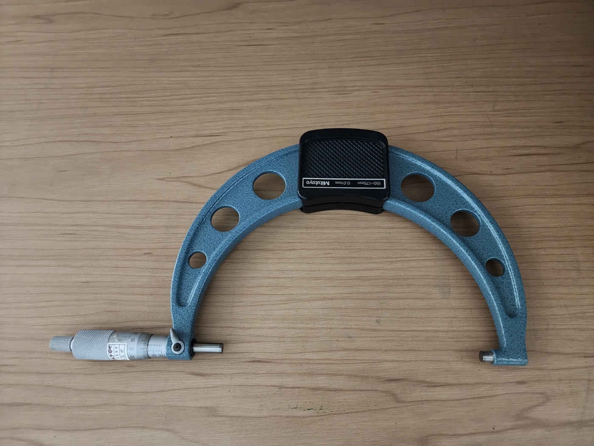

등록된 검교정 성적서가 없습니다.
01. 장비 정보
장비명: 마이크로미터 / 위치: QM 계측기실
정밀한 외경 측정에 사용하는 대표적인 계측기입니다.
사용 전 영점 확인과 측정면 상태 확인이 중요합니다.

02. 사용 전 주의사항
- 측정 전 앤빌과 스핀들의 측정면에 먼지나 이물질이 없는지 확인합니다.
- 사용 전에 영점(0점)이 정확한지 확인합니다.
- 측정물을 너무 강하게 조이지 말고, 래칫 스톱을 이용해 일정한 힘으로 측정합니다.
- 측정 중에는 프레임이나 측정면에 충격이 가해지지 않도록 주의합니다.
- 사용 후에는 측정면을 깨끗이 닦고 습기와 충격이 없는 곳에 보관합니다.
03. 사용 순서
- 측정 전 마이크로미터의 외관과 측정면 상태를 확인합니다.
- 스핀들을 닫아 영점(0점)이 맞는지 확인합니다.
- 측정할 대상물을 앤빌과 스핀들 사이에 위치시킵니다.
- 래칫 스톱을 사용하여 일정한 힘으로 측정물이 가볍게 고정되도록 조절합니다.
- 슬리브와 심블 눈금을 읽어 측정값을 확인한 후 기록합니다.
04. 사용 영상
장비 사용 영상을 아래에서 확인하세요.
05. 매뉴얼
아래 버튼을 누르면 매뉴얼 PDF를 바로 확인할 수 있습니다.
매뉴얼 보기06. 검교정 성적서
아래 항목에서 해당 설비 정보를 확인한 뒤, 성적서 보기 버튼을 눌러 검교정 성적서를 확인할 수 있습니다.